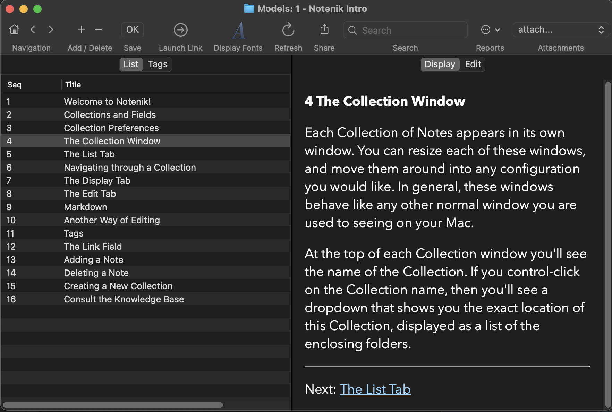

Notenik Intro
Back to Notenik.app
4 The Collection Window
Each Collection of Notes appears in its own window. You can resize each of these windows, and move them around into any configuration you would like. In general, these windows behave like any other normal window you are used to seeing on your Mac.
At the top of each Collection window you'll see the name of the Collection. If you control-click on the Collection name, then you'll see a dropdown that shows you the exact location of this Collection, displayed as a list of the enclosing folders.
Next: The List Tab